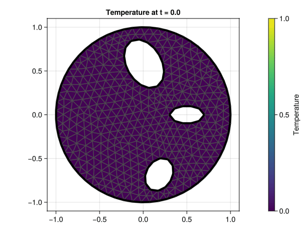

Heat equation
- Using Rothe's method to solve a time-dependent PDE
- Combining volume and boundary integral equations for efficient solution
- Handling complex domains with holes
- Animating the solution evolution using
Makie
Problem description
In this example, we'll solve the heat equation in a domain $\Omega$ with Dirichlet boundary conditions on $\Gamma := \partial \Omega$.
\[\begin{align*} \partial_t u(x,t) - \Delta u(x,t) &= f(x,t,u), \quad && x \in \Omega, \quad t \in [0,T]\\ u(x,t) &= g(x,t) \quad && x \in \Gamma, \quad t \in [0,T]\\ u(x, t = 0) &= u_0(x) \quad && x \in \Omega\\ \tag{Heat equation} \end{align*}\]
where:
- $u(x,t)$ represents temperature at position $x$ and time $t$
- $f(x,t,u)$ is a source/sink term (can depend on the solution itself for nonlinear problems)
- $g(x,t)$ specifies the Dirichlet boundary condition (prescribed temperature at the boundary)
- $u_0(x)$ is the initial temperature distribution
The heat equation is a parabolic PDE, and we will solve it using Rothe's method (also known as the method of lines transpose). This approach first discretizes in time, reducing the problem to a sequence of elliptic PDEs which we then solve using integral equations. This contrasts with the method of lines, which discretizes in space first and solves the resulting ODEs.
Solution approach
Overview
Our solution strategy follows these key steps:
- Time discretization: Apply backward Euler to convert the time-dependent PDE into a sequence of Yukawa equations
- Solution splitting: Decompose the solution into particular and homogeneous parts
- Integral formulation: Use volume potentials for the particular solution and boundary integrals for the homogeneous solution
- Discretization: Apply numerical quadrature to the integral operators
- Time stepping: Solve the sequence of spatial problems to march forward in time
Time discretization (Rothe's method)
Following these lecture notes by Costabel, we first discretize time using an implicit scheme (backward Euler for simplicity):
\[\begin{align*} u^{n} - \tau\Delta u^n &= \tau f^{n-1} + u^{n-1}, \quad && \text{in } \Omega\\ u^n &= g^n, \quad && \text{on } \partial\Omega \end{align*}\]
where $\tau$ is the time step and an $n$ superscript denotes the function value at time $t = n\tau$ (e.g. $u^n(x) = u(x, t = n\tau)$).
Converting to a Yukawa equation
Dividing both sides by $\tau$ we get a Yukawa (or modified Helmholtz) equation for the function $u^n$:
\[\begin{align*} -\Delta u^n + \frac{1}{\tau}u^n &= f^{n-1} + \frac{u^{n-1}}{\tau}, \quad && \text{in } \Omega\\ u^n &= g^n, \quad && \text{on } \partial\Omega \tag{Yukawa equation} \end{align*}\]
Solution decomposition
This is now amenable to an integral equation formulation. To do so we split the solution into a particular solution $u^n_p$ and a homogeneous solution $u^n_h$:
\[u^n = u^n_p + u^n_h\]
The particular solution
The function $u^n_p$ is given as a volume potential:
\[u^n_p(x) = \int_{\Omega} G(x, y) \left( f(y,t^{n-1}, u^{n-1}) + \frac{u^{n-1}(y)}{\tau} \right) \; \mathrm{d}\Omega(y) \tag{Particular solution}\]
where $G(x,y)$ is the fundamental solution of the Yukawa operator.
The homogeneous solution
As for the homogeneous solution $u^n_h$, it satisfies:
\[\begin{align*} -\Delta u^n_h + \frac{1}{\tau} u^n_h &= 0, \quad &&\text{in } \quad \Omega, \\ u^n_h &= g^n - u^n_p, \quad &&\text{on } \; \partial\Omega, \tag{Homogenous problem} \end{align*}\]
Boundary integral formulation
We'll use an indirect double-layer formulation, where we seek $u^n_h$ in the form:
\[u^n_h(r) = \mathcal{D}[\sigma](r), \quad r \in \Omega,\]
with $\mathcal{D}$ the double-layer potential associated with the Yukawa equation, and $\sigma$ the unknown density. Taking the interior Dirichlet trace (for a smooth boundary) yields:
\[\frac{-\sigma(x)}{2} + D[\sigma](x) = g^n(x) - u^n_p(x), \quad x \in \partial\Omega, \tag{BIE}\]
This boundary integral equation (BIE) allows us to solve for the density $\sigma$ on the boundary.
Summary of the solution strategy
The steps outlined above reduce the time-dependent heat equation to a sequence of forced Yukawa equations which can be solved using the same techniques as in the Poisson problem tutorial. For each time step:
- Use the volume potential to compute the particular solution $u^n_p$
- Solve the BIE to find the density $\sigma$
- Apply the double-layer potential to compute the homogeneous solution $u^n_h$
- Combine the solutions: $u^n = u^n_p + u^n_h$
Spatial discretization
We now proceed to discretize the inhomogeneous Yukawa equation. We will use Gmsh to create a disk with a few holes in it, representing a domain with inclusions where heat can flow around but not through.
Creating the mesh
using Inti
using Gmsh
function create_mesh(meshsize, meshorder=2)
gmsh.initialize()
gmsh.option.setNumber("General.Verbosity", 2)
gmsh.option.setNumber("Mesh.MeshSizeMax", meshsize)
disk = gmsh.model.occ.addDisk(0, 0, 0, 1, 1)
ell1 = gmsh.model.occ.addDisk(.5, 0, 0, 0.2, 0.1)
ell2 = gmsh.model.occ.addDisk(-.5, 0.3, 0, 0.3, 0.2)
gmsh.model.occ.rotate([(2,ell2)], 0, 0, 0, 0, 0, 1, -π/3)
ell3 = gmsh.model.occ.addDisk(-.5, -0.5, 0, 0.2, 0.15)
gmsh.model.occ.rotate([(2,ell3)], 0, 0, 0, 0, 0, 1, π/3)
gmsh.model.occ.cut([(2,disk)], [(2,ell1), (2,ell2), (2,ell3)])
gmsh.model.occ.synchronize()
gmsh.model.mesh.generate(2)
gmsh.model.mesh.setOrder(meshorder)
msh = Inti.import_mesh(; dim = 2)
gmsh.finalize()
return msh
end
meshsize = 0.1
meshorder = 2
tau = 2π / 40
msh = create_mesh(meshsize, meshorder)Inti.Mesh{2, Float64} containing:
101 elements of type Inti.LagrangeElement{Inti.ReferenceHyperCube{1}, 3, StaticArraysCore.SVector{2, Float64}}
743 elements of type Inti.LagrangeElement{Inti.ReferenceSimplex{2}, 6, StaticArraysCore.SVector{2, Float64}}
4 elements of type StaticArraysCore.SVector{2, Float64}Note that msh contains all the elements of the generated mesh, including the boundary segments and any point entities that Gmsh may have created. To properly index into our mesh elements, we must use Domains, which are simply a collection of geometric entities.
Extracting domain and boundary
Since we will need to work with $\Omega$ and $\Gamma$ separately, we will extract those domains and their corresponding (sub)meshes:
Ω = Inti.Domain(e -> Inti.geometric_dimension(e) == 2, msh)
Γ = Inti.boundary(Ω)
Ω_msh = @views msh[Ω]
Γ_msh = @views msh[Γ]Visualizing the geometry
Let's visualize the mesh to confirm our domain setup. The red outline shows the boundary $\Gamma$, which consists of both the outer boundary and the boundaries of the interior holes:
using Meshes
using GLMakie
fig = viz(
Ω_msh;
segmentsize = 1,
showsegments = true,
axis = (aspect = DataAspect(),),
figure = (; size = (500, 400)),
)
viz!(Γ_msh; color = :red, segmentsize = 4)Setting up numerical quadrature
Now we create quadrature rules for both $\Omega$ and $\Gamma$, which will be used to accurately integrate our kernel functions over the domain and boundary:
Ω_quad = Inti.Quadrature(Ω_msh; qorder = 3)
Γ_quad = Inti.Quadrature(Γ_msh; qorder = 3)Constructing integral operators
The Yukawa operator
First, we define the Yukawa operator with parameter $λ = 1/\sqrt{\tau}$, which arises from our time discretization:
λ = 1/sqrt(tau)
op = Inti.Yukawa(; dim = 2, λ)Yukawa operator in 2 dimensions: -Δu + λ²uCreating the integral operators
Next, we construct four key integral operators needed to solve our problem:
| Operator | Type | Purpose |
|---|---|---|
| $\mathcal{V}_{\Omega \to \Omega}$ | Volume potential | Computes the particular solution in the domain |
| $\mathcal{V}_{\Omega \to \Gamma}$ | Volume potential | Computes the trace of the particular solution on the boundary |
| $\mathcal{D}_{\Gamma \to \Gamma}$ | Double-layer operator | Solves for the density on the boundary |
| $\mathcal{D}_{\Gamma \to \Omega}$ | Double-layer potential | Computes the homogeneous solution in the domain |
Setting operator parameters
For each operator, we specify compression and correction parameters:
# using HMatrices
# compression = (method = :hmatrix, atol = 1e-8)
correction = (
method = :adaptive,
threads = true,
maxdist = 3 * meshsize,
atol = 1e-6,
maxsubdiv = 10_000,
)
compression = (method = :none,)Instead of using a dense matrix representation of the integral operators, you would typically enable HMatrix compression for larger problems. The commented code shows how to configure it with appropriate tolerance parameters.
Building the operators
Let's create our operators:
V_d2b = Inti.volume_potential(;
op,
target = Γ_quad,
source = Ω_quad,
compression,
correction,
)
_, D_b2b = Inti.single_double_layer(;
op,
target = Γ_quad,
source = Γ_quad,
compression,
correction
)
V_d2d = Inti.volume_potential(;
op,
target = Ω_quad,
source = Ω_quad,
compression,
correction,
)
_, D_b2d = Inti.single_double_layer(;
op,
target = Ω_quad,
source = Γ_quad,
compression,
correction
)Time evolution
Factoring the boundary integral operator
Since our domain remains fixed throughout the simulation, we can factor the boundary integral operator to improve computational efficiency:
using LinearAlgebra
L = -I/2 + D_b2b
F = lu(L)Verification with a manufactured solution
To verify our implementation, we'll first use the method of manufactured solutions. We choose a known analytical solution $u_e(x,t)$ and derive the corresponding source term and boundary conditions:
uₑ = (x, t) -> sin(x[1]) * sin(x[2]) * cos(t)
f = (x, t) -> 2 * uₑ(x, t) - sin(t) * sin(x[1]) * sin(x[2])
g = (x, t) -> uₑ(x, t) # boundary valuesTime-stepping algorithm
Now we perform the time-stepping loop for one full period ($T = 2\pi$):
nsteps = round(Int, 2π/tau)
uⁿ⁻¹ = map(q -> uₑ(q.coords, 0), Ω_quad) # initial condition
uⁿ = zero(uⁿ⁻¹)
t = Ref(0.0)
for n in 1:nsteps
# 1. Evaluate source term at current time
fⁿ = map(q -> f(q.coords, t[] + tau), Ω_quad)
# 2. Compute the particular solution
uₚⁿ = V_d2d*(fⁿ + uⁿ⁻¹/tau)
# 3. Evaluate boundary conditions
gⁿ = map(q -> g(q.coords, t[] + tau), Γ_quad)
# 4. Solve BIE and compute homogeneous solution
uₕⁿ = D_b2d * (F \ (gⁿ - V_d2b * (fⁿ + uⁿ⁻¹ / tau)))
# 5. Combine solutions and update for next time step
uⁿ .= uₚⁿ + uₕⁿ
uⁿ⁻¹ .= uⁿ
t[] += tau
endLet's check the accuracy of our solution by comparing with the exact solution:
uref = map(q -> uₑ(q.coords, t[]), Ω_quad) # reference solution
er = norm(uⁿ - uref, Inf) / norm(uref, Inf)
er0.0018429871071135823A relative error of this magnitude confirms that our implementation is working correctly.
Testing that the error is "small" is just a basic verification. For rigorous validation, we should analyze the convergence order as we refine both spatial and temporal discretizations. For this example, the error is primarily determined by the first-order backward Euler scheme. Try halving the time step and observe how the error reduces approximately by a factor of 2!
Now let's explore a more interesting scenario: heat flow in a domain with inclusions. We'll set the temperature to zero at the outer boundary and apply a time-varying temperature of $\sin^2(t)$ at the boundaries of the inclusions:
f = (x, t) -> 0.0
g = (x, t) -> norm(x) > 0.9 ? 0.0 : (sin(t))^2
u⁰ = zeros(length(Ω_quad))This physical setup models a scenario where the outer surface is kept at a constant cold temperature, while the inclusions have a periodically varying temperature - similar to heat sources that turn on and off.
Visualizing the temperature evolution
Here's the animation of the temperature distribution evolving over time:
fig = Figure()
ax = Axis(fig[1, 1]; aspect = DataAspect())
colorrange = (0.0, 1.0)
record(fig, joinpath(@__DIR__,"heat.gif")) do io
nsteps = round(Int, 2π/tau)
uⁿ⁻¹ = u⁰
uⁿ = zero(uⁿ⁻¹)
t = 0.0
for n in 1:nsteps
# Convert quadrature values to node values for visualization
u_nodes = Inti.quadrature_to_node_vals(Ω_quad, uⁿ⁻¹)
# Setup visualization for current frame
ax.title = "Temperature at t = $(round(t, digits = 2))"
viz!(Ω_quad.mesh; showsegments = true, color = u_nodes, colorrange)
viz!(Γ_msh; color = :black, segmentsize = 4)
Colorbar(fig[1, 2]; colorrange = colorrange, label = "Temperature")
# Record current frame
recordframe!(io)
# Solve for next time step
fⁿ = map(q -> f(q.coords, t + tau), Ω_quad)
uₚⁿ = V_d2d*(fⁿ + uⁿ⁻¹/tau)
gⁿ = map(q -> g(q.coords, t + tau), Γ_quad)
uₕⁿ = D_b2d * (F \ (gⁿ - V_d2b * (fⁿ + uⁿ⁻¹ / tau)))
uⁿ = uₚⁿ + uₕⁿ
uⁿ⁻¹ = uⁿ
t += tau
end
end
Summary and extensions
We've demonstrated how to solve the heat equation using Rothe's method combined with boundary integral equations. This approach effectively handles complex geometries and provides accurate solutions with reasonable computational cost.
To extend this example, consider:
- Implementing a second-order time scheme (e.g., Crank-Nicolson) for improved accuracy
- Utilizing hierarchical matrix compression (
HMatrix) for larger domains - Exploring more complex geometries or physical scenarios
- Adding nonlinear terms to model more complex physical phenomena